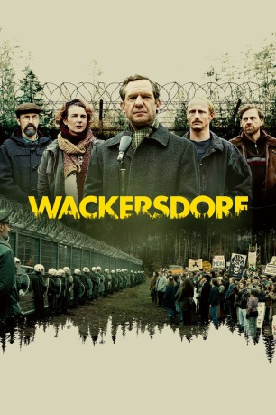
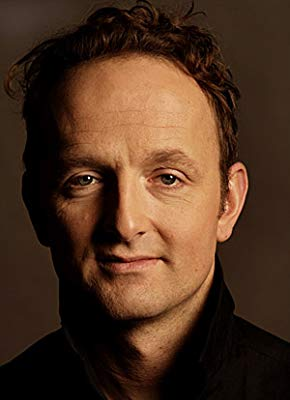

#10748 Wackersdorf
 
 IMDB-Wertung: 7.3 / 10
IMDB-Wertung: 7.3 / 10  Metascore: 0
Metascore: 0 
Oberpfalz, 1980er Jahre: Die Arbeitslosenzahlen steigen und der Landrat Hans Schuierer steht unter Druck, Perspektiven für die Bevölkerung zu schaffen. Da erscheinen ihm die Pläne der Bayerischen Staatsregierung wie ein Geschenk: In der beschaulichen Gemeinde Wackersdorf soll eine atomare Wiederaufbereitungsanlage (WAA) gebaut werden, die wirtschaftlichen Aufschwung für die ganze Region verspricht. Doch als der Freistaat ohne rechtliche Grundlage mit Gewalt gegen Proteste einer Bürgerinitiative vorgeht, die sich für den Erhalt der Natur in ihrer Heimat einsetzt, steigen in Schuierer Zweifel auf. Vielleicht ist die Anlage doch nicht so harmlos wie behauptet. Er beginnt nachzuforschen und legt sich mit der mächtigen Strauß-Regierung an.
Jahr: 2018
Dauer: 122 Minuten
FSK:
Land: Deutschland Studio: Alamode FilmTonspuren:
Untertitel:
Auflösung: 1080p (1920x808) Größe: 5468 MB
Genre: Drama, Geschichte
Regisseur: Oliver Haffner
Drehbuch: Oliver Haffner, Gernot Krää
Soundtrack:
Darsteller:
- Marlene Morreis als Frau Knapp
 August Zirner als Innenminister
August Zirner als Innenminister- Anna Maria Sturm als Monika Gegenfurtner
 Johannes Zeiler als Hans Schuierer
Johannes Zeiler als Hans Schuierer- Fabian Hinrichs als Karlheinz Billinger
- Thomas Limpinsel als Gegenfurtner
- Frederic Linkemann als Staatsekretär
- Andreas Nickl als Eberwein
-  Peter Jordan als Claus Bössenecker
- Johannes Herrschmann als Pirner
- Florian Brückner als
- Sigi Zimmerschied als Umweltminister
- Andreas Bittl als Karl Gegenfurtner
- Monika Manz als
- Daniel Holzberg als Referent Umweltminister
- Harry Täschner als Pfarrer Seybold
- Ines Honsel als Lilo Schuirer
- Katharina Hauter als Bibliothekarin
- Tobias John von Freyend als Bendix
- Axel Röhrle als Ingenieur
- Jakob Spieler als Kellner Jakob
- Dietmar Dengler als Meininger
- Wolfgang Schäuble als Himself (archive footage) (uncredited)
- Franz Josef Strauß als Himself (archive footage) (uncredited)
Datei: X:\2018(N-Z)\Wackersdorf (2018, FSK, 1920x808).mkv seit 22.02.2019
Festplatte: HD 2018(G-Z)-2019(A-Z)
 Es gibt insgesamt 172 Filme in der Gruppe '2018(N-Z)'
Es gibt insgesamt 172 Filme in der Gruppe '2018(N-Z)'